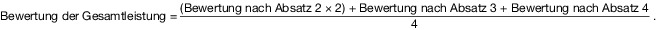

(1) Jede Leistung in den sieben Prüfungsbestandteilen nach § 7 Nummer 1 bis 3, § 12 Nummer 1 und 2 sowie § 16 Nummer 1 und 2 ist gesondert mit einer Note als Dezimalzahl nach Anlage 1 zu bewerten.
(2) Die Bewertung der Leistung des Prüfungsteils „Baumdiagnose und Baumpflegemaßnahmen“ errechnet sich aus den Noten der Prüfungsbestandteile Arbeitsprojekt (§ 8), Arbeitsprobe (§ 9) und schriftliche Prüfung (§ 10) nach folgender Formel:

(3) Die Bewertung der Leistung des Prüfungsteils „Betriebs- und Unternehmensführung“ errechnet sich aus den Noten der Prüfungsbestandteile Fallstudie (§ 13) und schriftliche Prüfung (§ 14) nach folgender Formel:

(4) Die Bewertung der Leistung des Prüfungsteils „Mitarbeiterführung und Personalmanagement“ errechnet sich aus den Noten der Prüfungsbestandteile Fallstudie (§ 17) und schriftliche Prüfung (§ 18) nach folgender Formel:

(5) Die Bewertung der Gesamtleistung in der Prüfung errechnet sich aus den Bewertungen der Prüfungsteile „Baumdiagnose und Baumpflegemaßnahmen“ (Absatz 2), „Betriebs- und Unternehmensführung“ (Absatz 3) und „Mitarbeiterführung und Personalmanagement“ (Absatz 4) nach folgender Formel: 